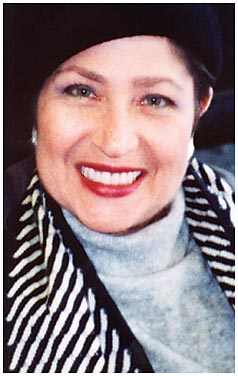
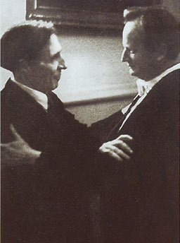
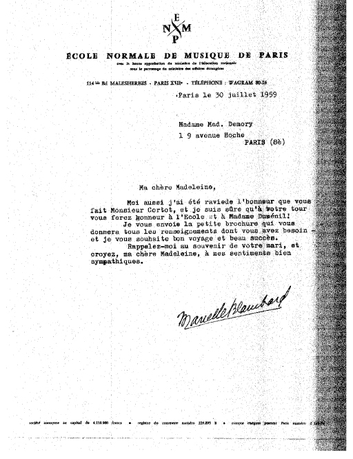

Madeleine Forte began her career at a Beethoven festival in Vichy, France. La Montagne wrote of her debut: "A new star has risen in the firmament of artistic glory. A young girl, age 13, played with great brio Beethoven's Appassionata, so that the audience stood and gave a lengthy ovation." She first studied piano with her aunt, then with master pianists Alfred Cortot and Wilhelm Kempff. She has won prizes in international competitions (Viotti, Italy; Maria Canals, Spain; Guanabara, Brazil).
She holds a Musicology Diploma from the Ecole Normale de Musique in Paris in the class of Norbert Dufourcq, Artist Diplomas from the Ecole Normale and the Frédéric Chopin Academy of Music in Warsaw in the class of Zbigniew Drzewiecki, and bachelor’s and master’s degrees from The Juilliard School, where she studied with Rosina Lhevinne and Martin Canin. In 1970, she received the "Josef Lhevinne Memorial Award" in New York. In 1984 she received the Ph.D. degree from New York University with a dissertation on the music of Olivier Messiaen. She is a recipient of the Master Teacher Certificate, Music Teachers National Association. She is a founding member of The Bel-Être Ensemble and the Lillibridge Ensemble.
Madeleine Forte has appeared as a recording artist on Radiodiffusion-television française in Paris, on Radio Warsaw, on Television O Globo, Rio-de-Janeiro, Radio Television Buenos Aires, and NBC Television, New York. She has presented solo recitals and has performed as a soloist with orchestras in France, Italy, Spain, Switzerland, Belgium, Poland, Estonia, Hungary, Brazil, Argentina, Uruguay, Austria, England, Norway, the United States, Canada, China, Japan, and South Korea. Her compact disc recordings of the music of Albeniz, Arensky, Barber, Bartók, Beethoven, Bizet, Chabrier, Chopin, Debussy, Falla, Gliere, Khachaturian, Liszt, Liszt-Busoni, Manuel Infante, Messiaen, Poulenc, Rachmaninoff, Ravel, and Saint-Saens are distributed and have attracted attention worldwide.
Mme. Forte is Professor Emerita of Piano at the Morrison Center for the Performing Arts, and has given lectures and master classes at many colleges and universities in the United States and abroad. She is the author of several publications, including the book Olivier Messiaen, the Musical Mediator. Forte is a member of the American Liszt Society and of Mu Phi Epsilon. She is a Fellow of Silliman College, Yale University. In 1996 she was a Yale University Visiting Hendon Fellow. The Madeleine Hsu Forte Piano scholarship is offered on a yearly basis to a gifted piano student at Boise State University. Madeleine Forte resides in Connecticut.
Click here for Madame Forte's official résumé.


